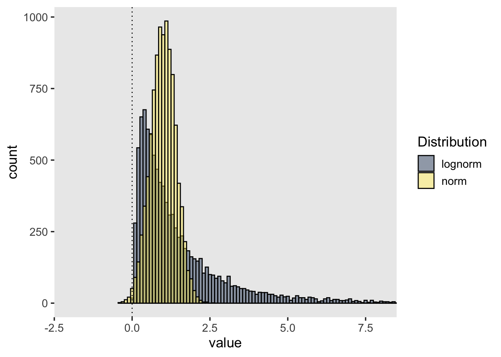
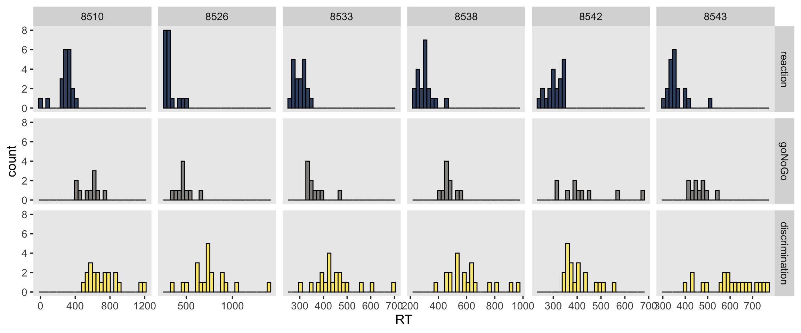
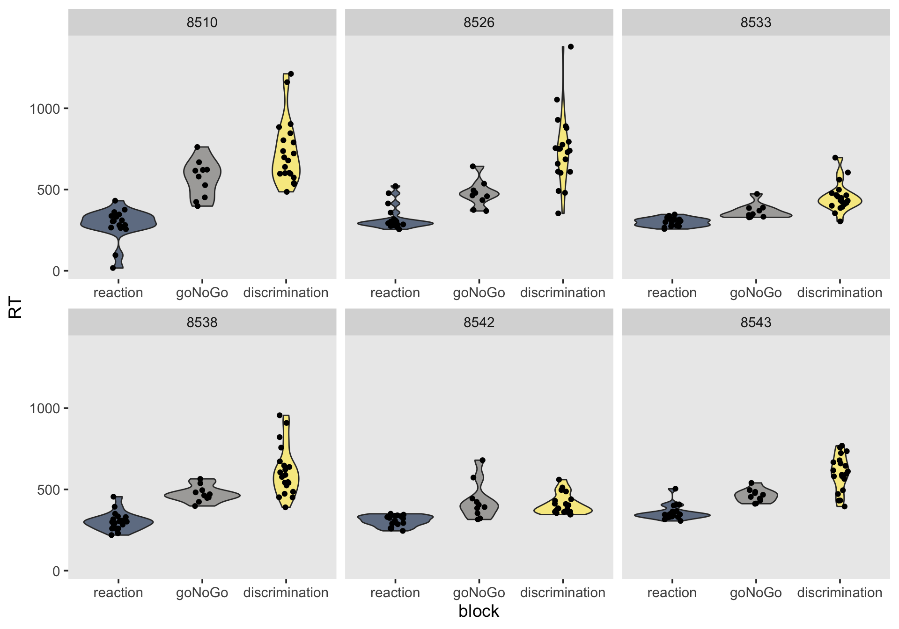
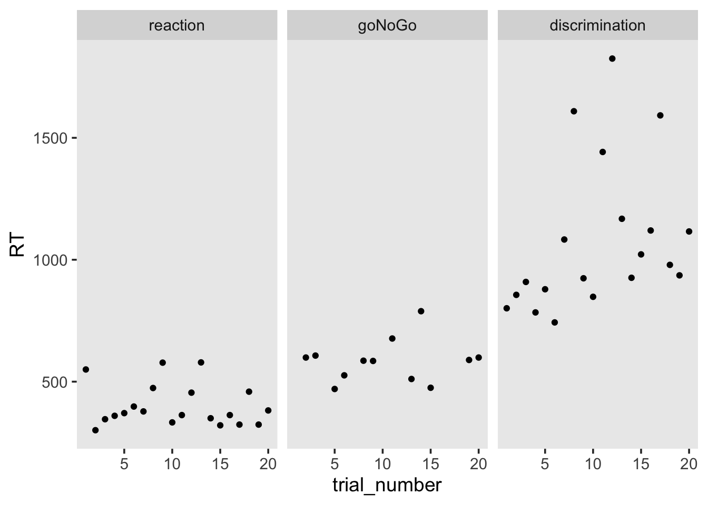
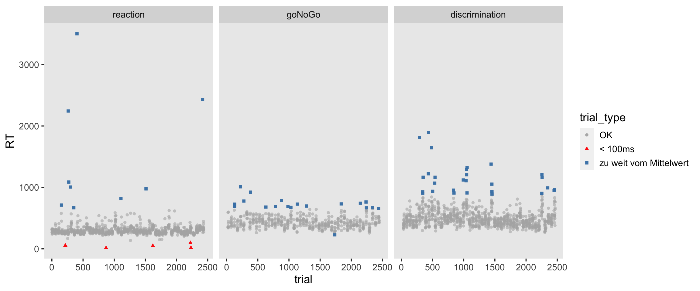
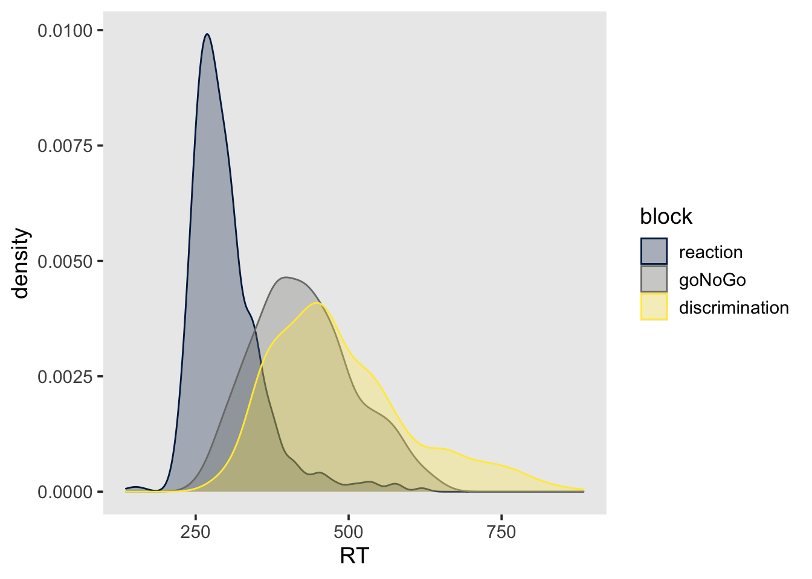

library(tidyverse)
library(viridis)
theme_set(theme_grey(base_size = 14) +
theme(panel.grid = element_blank()))Data cleaning
Daten aus Verhaltensexperiments bearbeiten und Datenpunkte identifizieren.
Andrew Ellis ![]()
Note
Nun wollen wir versuchen, einzelne Trials, zu identifizieren, in denen Versuchpersonen nicht aufgepasst haben, oder einfach geraten wurde.
Am häufigsten werden die folgenden beiden Kriterien verwendet, um entweder einzelne Datenpunkte, oder Versuchspersonen, auszuschliessen:
Versuchspersonen, deren Accuracy < 50% ist.
Trials, in denen die Antwort zu schnell oder zu langsam war.
Nun ist in Experimenten, in denen ein Bias erzeugt wird, etwas heikel, Trials oder Versuchspersonen aufgrund der Anzahl korrekter Antworten auszuschliessen - wir haben ja die Korrektheit der Antworten experimentell manipuliert.
Deswegen richten wir hier unseren Fokus auf die Reaktionszeiten. Wir gehen davon aus, dass Reaktionszeiten, die zu schnell oder yu langsam waren, aufgrund von Rateprozessen zustande kamen. Was genau zu schnell oder zu langsam heisst, ist schwierig zu beantworten, und hängt stark vom jeweiligen Task ab. Deshalb ist es wichtig, sich a priori Gedanken darüber zu machen, welche Kriterien angewandt werden sollen.
Reaktionszeiten
Drei häufig verwendete Tasks, um Reaktionszeiten zu messen sind
- Reaction tasks
- Go/No Go tasks
- Discrimination tasks
Bei Reaction tasks muss auf einen Reiz reagiert werden, bei Go/No Go tasks muss zwischen zwei Reizen unterschieden, und nur auf einen reagiert werden. Discrimination tasks erfordern komplexere kognitive Leistungen, da eine von zwei Antworten gegeben werden muss, in Abhängigkeit des Reizes.
Wenn wir Reaktionszeiten messen, gehen wir gehen davon aus, dass die Zeit, die benötigt wird, um einen Task auszuführen, uns über den kognitiven Prozess Auskunft gibt. Dabei ist es aber wichtig, dass die Versuchsperson in dieser Zeit wirklich genau den Task ausführt, und nicht nebenher noch andere Prozesse die Reaktionszeit beeinflussen, da diese sonst bedeutungslos wäre. Leider ist dies nicht immer der Fall. Bei vielen repetitiven Tasks sind attentional lapses nicht zu vermeiden, und nur bei den einfachsten Tasks ist es möglich, sicherzustellen, dass die VP auch wirklich den intendierten Task ausführt.
Eigenschaften von Reaktionszeiten
Die wichtigsten Merkmale von Reaktionszeiten sind
- Sie sind rechtsschief
- Sie sind nicht normalverteilt
- Streuung (Standardabweichung) steigt ungefähr linear mit wachsendem Mittelwert (Wagenmakers and Brown 2007)
Die Rechtschiefe ist eine natürliche Konsequenz der Tatsache, dass es viele Möglichkeiten gibt, langsamer zu werden, aber nur wenige Möglichkeiten, schneller zu werden. Reaktionszeiten können nicht negativ sein Ausserdem gibt es eine Untergrenze, welche durch unsere Physiologie bestimmt ist. Schellere Reaktionszeiten als 200 Millisekunden sind kaum möglich.
Die Konsequenz daraus ist, dass Reaktionszeiten nicht normalverteilt sind. In folgender Grafik sind zwei Verteilungen dargestellt. Die gelbe Verteilung ist eine Normalverteilung mit \(\mu = 1\) und \(\sigma = 0.4\), während die graue Verteilung eine LogNormal Verteilung darstellt.

Obwohl die Normalverteilung so aussieht, als könne sie Reaktionszeiten repräsentieren, ist der Wertebereich von \([-\Inf, \Inf]\) nicht dafür geeignet. Ausserdem erlaubt die Normalverteilung keine extremen Werte, und ist nicht asymmetrisch.
Daten aus einem Reaktionszeitexperiment
Wir untersuchen nun Daten aus einem Online-Experiement mit 3 Blöcken. In jedem Block mussten Versuchspersonen einen anderen Task ausführen. Unser Ziel ist es, Datenpunkte zu identfizieren, welche wir eventuell ausschliessen müssen.
Die drei Tasks sind:
- Reaction task
Versuchspersonen drücken SPACE-Taste wenn ein Stimulus erscheint (Quadrat oder Kreis). Abhängige Variable ist die Reaktionszeit.
- Go/No-Go task
Versuchspersonen drücken SPACE-Taste wenn Target erscheint (entweder Quadrat oder Kreis). Abhängige Variablen sind Reaktionszeit und Antwort.
- Discrimination task
Versuchspersonen drücken F-Taste wenn ein Quadrat erscheint, J-Taste wenn ein Kreis erscheint. Abhängige Variablen sind Reaktionszeit und Antwort.
Annahme: Versuchspersonen brauchen im Reaction Task am wenigsten Zeit, um eine korrekte Antwort zu geben, gefolgt vom Go/No-Go Task. Im Discrimination Task brauchen Versuchspersonen länger, um korrekte Antworten zu geben.
library(tidyverse)
URL <- "https://raw.githubusercontent.com/kogpsy/neuroscicomplab/main/data/mental-chronometry.csv"
mentalchronometry <- read_csv(URL) |>
mutate(across(c(subj, block, stimulus, handedness, gender), ~as_factor(.)))Rows: 2519 Columns: 7
── Column specification ────────────────────────────────────────────────────────
Delimiter: ","
chr (4): block, stimulus, handedness, gender
dbl (3): subj, trial_number, RT
ℹ Use `spec()` to retrieve the full column specification for this data.
ℹ Specify the column types or set `show_col_types = FALSE` to quiet this message.glimpse(mentalchronometry)Rows: 2,519
Columns: 7
$ subj <fct> 8554, 8554, 8554, 8554, 8554, 8554, 8554, 8554, 8554, 855…
$ trial_number <dbl> 1, 2, 3, 4, 5, 6, 7, 8, 9, 10, 11, 12, 13, 14, 15, 16, 17…
$ block <fct> reaction, reaction, reaction, reaction, reaction, reactio…
$ stimulus <fct> circle, square, square, square, circle, square, square, c…
$ RT <dbl> 311, 269, 317, 325, 240, 262, 295, 277, 288, 309, 319, 29…
$ handedness <fct> Right, Right, Right, Right, Right, Right, Right, Right, R…
$ gender <fct> female, female, female, female, female, female, female, f…mentalchronometry# A tibble: 2,519 × 7
subj trial_number block stimulus RT handedness gender
<fct> <dbl> <fct> <fct> <dbl> <fct> <fct>
1 8554 1 reaction circle 311 Right female
2 8554 2 reaction square 269 Right female
3 8554 3 reaction square 317 Right female
4 8554 4 reaction square 325 Right female
5 8554 5 reaction circle 240 Right female
6 8554 6 reaction square 262 Right female
7 8554 7 reaction square 295 Right female
8 8554 8 reaction circle 277 Right female
9 8554 9 reaction square 288 Right female
10 8554 10 reaction circle 309 Right female
# … with 2,509 more rowsHier sind die Daten von 5 zufällig ausgewählten Personen:
set.seed(98)
subjects <- sample(levels(mentalchronometry$subj), 6)
df <- mentalchronometry |>
filter(subj %in% subjects)
df |>
ggplot(aes(RT, fill = block)) +
geom_histogram(alpha = 0.8, position = "identity", color = "black") +
scale_fill_viridis(discrete=TRUE, option="cividis") +
facet_grid(block ~ subj, scales = "free_x") +
theme(legend.position = "none")
df |>
filter(subj %in% subjects) |>
ggplot(aes(y = RT, x = block, fill = block)) +
geom_violin(alpha = 0.6) +
geom_jitter(width = 0.1) +
scale_fill_viridis(discrete=TRUE, option="cividis") +
facet_wrap(~ subj, scales = "free_x") +
theme(legend.position = "none")
Wir können versuchen Ausreisser zu identifizieren.
Cleaning by subject
Unser Ziel ist es, die Daten einer Versuchsperson zu entfernen, falls diese Person in einer experimentellen Bedingung eine mittlere RT hat, welche mehr als 2 Standardabweichungen vom Gesamtmittelwert liegt.
# summary stats (means) for participants
sum_stats_participants <- mentalchronometry |>
group_by(subj, block) |>
dplyr::summarise(
mean_P = mean(RT))
# summary stats (means and SDs) for conditions
sum_stats_conditions <- mentalchronometry |>
group_by(block) |>
dplyr::summarise(
mean_C = mean(RT),
sd_C = sd(RT))
sum_stats_participants <-
full_join(
sum_stats_participants,
sum_stats_conditions,
by = "block") |>
mutate(
outlier_P = abs(mean_P - mean_C) > 2 * sd_C)
# show outlier participants
sum_stats_participants |>
filter(outlier_P == 1) |>
show()# A tibble: 1 × 6
# Groups: subj [1]
subj block mean_P mean_C sd_C outlier_P
<fct> <fct> <dbl> <dbl> <dbl> <lgl>
1 8505 discrimination 1078. 518. 185. TRUE Wir haben also eine Person, welche in einer Bedingung (discrimination) eine mittlere RT hat, welche mehr als 2 Standardabweichungen vom Gesamtmittelwert dieser Bedingung liegt.
Weiter können wir die RT für jeden Trial in jeder Bedingung plotten. Es ist klar, dass die mittlere RT im discrimination aufgrund mehrerer Ausreisser zustande kommt.
mentalchronometry |>
semi_join(sum_stats_participants |> filter(outlier_P == 1),
by = c("subj")) |>
ggplot(aes(x = trial_number, y = RT)) +
geom_point() +
facet_wrap(~block)
Wir könnten diese Person ganz ausschliessen.
excluded <- sum_stats_participants |>
filter(outlier_P == 1)
excluded# A tibble: 1 × 6
# Groups: subj [1]
subj block mean_P mean_C sd_C outlier_P
<fct> <fct> <dbl> <dbl> <dbl> <lgl>
1 8505 discrimination 1078. 518. 185. TRUE Cleaning by trial
Nun wollen alle Trials identifizieren, welche mehr als 2 Standardabweichungen vom Bedingungs-Gesamtmittelwert liegen. Ausserdem entfernen wir alle RTs, welche unter 100 Millisekunden liegen.
# mark individual trials as outliers
mentalchronometry_cleaned <- mentalchronometry_cleaned |>
full_join(
sum_stats_conditions,
by = "block") |>
mutate(
trial_type = case_when(
abs(RT - mean_C) > 2 * sd_C ~ "zu weit vom Mittelwert",
RT < 100 ~ "< 100ms",
TRUE ~ "OK") |>
factor(levels = c("OK", "< 100ms", "zu weit vom Mittelwert")),
trial = row_number())# visualize outlier trials
mentalchronometry_cleaned |>
ggplot(aes(x = trial, y = RT, color = trial_type, shape = trial_type)) +
geom_point(alpha = 0.6) +
geom_point(data = filter(mentalchronometry_cleaned, trial_type != "OK"),
alpha = 0.9) +
facet_grid(~block) +
scale_color_manual(values = c("gray70", "red", "steelblue"))
Wir haben insgesamt 63 Trials, welche nach unseren Kriterien Ausreisser sein könnten.
mentalchronometry_cleaned |>
filter(trial_type != "OK")# A tibble: 63 × 11
subj trial_number block stimulus RT handedness gender mean_C sd_C
<fct> <dbl> <fct> <fct> <dbl> <fct> <fct> <dbl> <dbl>
1 8552 11 goNoGo square 690 Right male 442. 104.
2 8552 14 goNoGo square 727 Right male 442. 104.
3 8552 17 goNoGo square 697 Right male 442. 104.
4 8552 18 goNoGo square 720 Right male 442. 104.
5 8551 3 reaction square 712 right male 311. 157.
6 8550 16 reaction square 54 right male 311. 157.
7 8550 4 goNoGo circle 1010 right male 442. 104.
8 8549 11 reaction square 2244 Righthanded male 311. 157.
9 8549 20 reaction square 1087 Righthanded male 311. 157.
10 8549 12 goNoGo square 778 Righthanded male 442. 104.
# … with 53 more rows, and 2 more variables: trial_type <fct>, trial <int>Diese 63 Trials entfernen wir nun.
mentalchronometry_cleaned <- mentalchronometry_cleaned |>
filter(trial_type == "OK")mentalchronometry_cleaned |>
ggplot(aes(x = RT, color = block, fill = block)) +
geom_density(alpha = 0.3) +
scale_fill_viridis(discrete=TRUE, option="cividis") +
scale_color_viridis(discrete=TRUE, option="cividis")
Data Cleaning ist zwar in den meisten Fällen notwendig, aber leider etwas willkürlich, und gibt dem Forscher/der Forscherin sehr viele Freiheiten (researcher degrees of freedom). Es ist deshlab wichtig, Ausschlusskriterien für Personen und einzelne Trials vor der Analyse festzulegen, und offen zu berichten.
References
Wagenmakers, Eric-Jan, and Scott Brown. 2007. “On the Linear Relation Between the Mean and the Standard Deviation of a Response Time Distribution.†Psychological Review 114 (3): 830–41. https://doi.org/10.1037/0033-295X.114.3.830.
Reuse
Citation
BibTeX citation:
@online{ellis2022,
author = {Andrew Ellis},
title = {Data Cleaning},
date = {2022-03-15},
url = {https://kogpsy.github.io/neuroscicomplabFS22//pages/chapters/03_data_cleaning.html},
langid = {en}
}
For attribution, please cite this work as:
Andrew Ellis. 2022. “Data Cleaning.†March 15, 2022. https://kogpsy.github.io/neuroscicomplabFS22//pages/chapters/03_data_cleaning.html.